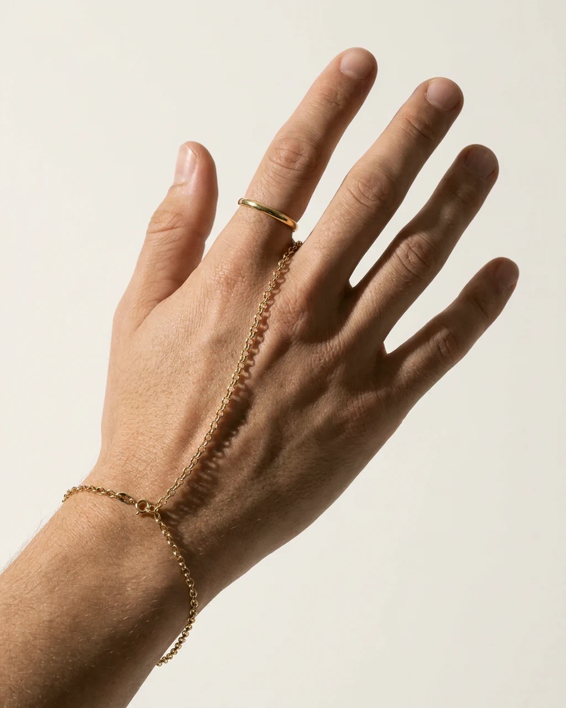

Handchain.
A bracelet at the wrist, a ring on the finger, and a short length of chain crossing the back of the hand between them. Both ends are anchored, so the piece stays where you put it.

- Construction
- Bracelet and ring joined by chain
- Anchors
- Wrist clasp, one finger band
- Chain drop
- 3–4 in on an average adult hand
- Metals
- Sterling, gold filled, solid gold
Two anchors, one line of chain.
A hand chain is jewellery that joins a bracelet and a ring with a short length of chain, and it takes its name from the construction rather than from a single fixed design. The bracelet sits at the wrist, the ring sits on a finger, and the chain crosses the back of the hand over the knuckles and tendons to connect the two.
The form appears in South Asian and Middle Eastern jewellery traditions, where a chain from ring to wrist piece is part of bridal and festival sets. In the US it has moved from costume jewellery into demi-fine and fine collections, most often in sterling silver, gold filled or solid gold, and it is usually styled as a layering piece rather than a single statement.
Because both ends are anchored, the chain cannot slide up the arm the way a loose bangle does. That one mechanical difference is the whole argument for the piece — and the reason fit matters more than it does on a bracelet. How each construction sits on the hand is covered separately.
Five ways to hang a chain.
Ordered from the plainest to the most engineered. All five keep the same ring-to-bracelet anchoring; what changes is how the chain meets the hand.
- 01
Single-strand
One chain from ring to bracelet. The easiest version to wear every day, and the one that tangles least.
Daily wear - 02
Multi-strand
Two or more chains running in parallel or crossing, usually with a wider bracelet to hold the extra strands.
Stacked - 03
Charm
A single chain with a small charm or coin sitting on the back of the hand, where it is most visible.
Occasion - 04
Cuff-linked
A rigid or semi-rigid cuff at the wrist instead of a clasped bracelet, with the chain attached to it.
Structured - 05
Multi-ring
A chain that branches to two or three rings across the fingers — sometimes called a midi or two-finger design.
Statement
Three numbers decide the fit.
Ordering by ring size alone is the most common mistake. Wrist circumference, ring size and the span across the back of the hand all move the chain's drop, and a piece that is right on the finger can still sit too tight across the knuckles.
| Measurement — where it is taken | Typical range |
|---|---|
| WristAround the wrist bone, tape snug, not tight | 14–18 cm |
| RingIndex, middle or ring finger of the wearing hand | US 4–10 |
| Hand spanBase of the finger to the wrist, across the back | 8–10 cm |
The chain section between ring and bracelet is short — usually 3–4 in — and many pieces include a 1–2 in extender so the drape can be adjusted after the ring is seated. The size guide walks through all three measurements and what to do between sizes.
Wearing order
Put the ring on first, then fasten the bracelet. Make a fist, then spread your fingers: the chain should follow the hand without pulling the ring tight or looping loose enough to catch on a sleeve.
Style guide, § 04 — how a hand chain is worn
Three metals, three lifespans.
Gold filled holds its colour far longer than plating, because the gold layer is bonded rather than electroplated; plated pieces are the most affordable and the most likely to wear where the chain rubs against the ring and the clasp.
Whichever metal, the routine is the same: store it flat or hanging in a soft pouch, take it off before swimming, showering or the gym, and put it on last, after lotion and perfume have dried. Read the three labels before you buy.
The rest of the guide.
- 01Five hand chain styles, comparedHow single-strand, multi-strand, charm, cuff-linked and multi-ring pieces sit on the hand.
- 02Measure for a hand chain at homeWrist, ring and hand span, step by step, with the fit checks to run before ordering.
- 03Hand chain or bracelet?Fit, comfort, styling and daily wear, compared without a sales pitch.
- 04Layer without tanglingWhat to pair with a hand chain, what to skip, and how to stop chains twisting together.
- 05Gold filled, plated or sterlingWhat each label means, how each wears, and how to care for it.
- 06Hand chain FAQWhich finger, sizing, daily wear, tangling and adjusting the drop.